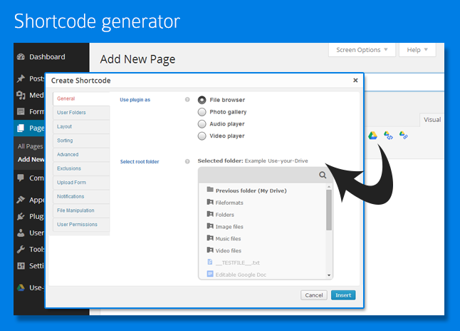

Use-your-Drive (1.5.4)
Use your Google Drive in WordPress
View, add, delete, rename files & pictures and stream your favorite music and video’s directly from Google Drive
File browser
-
View Google Drive folders & files directly on your site
-
Upload form so users can upload (multiple) files to Google Drive
-
Add, delete and rename files & folders
-
Download files as zip file
-
Search your Google Drive for files & folders
-
If needed you can restrict users so they are only able to use their 'own' Google Drive folder
Gallery
-
Great looking grid with lightbox
-
Folder thumbnails shows whats inside the folder
-
Customize image row height
-
Shuffle images
-
Add, delete and rename images
-
Download images as zip file
Audio & Video
-
Streams audio files directly from your Google Drive with a HTML 5 audioplayer with flash-fallback
-
.m4a (AAC/H.264)
-
.oga (Vorbis/Theora)
-
.mp3
-
Streams video files directly from your Google Drive with a HTML 5 audioplayer with flash-fallback. (Do always supply a mp4 or m4v file for cross-browser support)
-
.webmv (Vorbis/VP8)
-
.ogv (Vorbis/Theora)
-
.mp4 (Limited support)
-
.m4v (AAC/H.264)
-
Multiple awesome skins
General
-
Sort files by name, size or modified date
-
Restrict viewing by file extension and file or folder name
-
Restrict uploading files by file extension
-
Restrict which user can see, download, rename or delete your files or upload new ones. You can set the required roles by yourself
-
Secure OAuth 2 authentication
-
Powerful but intuitive shortcode generator
-
Multi Sites supported
-
Multi language supported
-
Auto-updater
-
And finally... All elements are responsive!
Install Use-your-Drive
-
Upload the contents of the zip file to wp-content/plugins/ and activate the plugin in your admin
panel
-
Authorize the App on the plugin settings page
-
Use-your-Drive is ready to use!
Updating the plugin
The plugin you have downloaded via CodeCanyon isn't always the latest version. To be sure that you have the latest version installed the plugin comes with an auto-updater.
You can enable this auto-updater by activating the plugin on the settings page of the plugin. After this, you can update the plugin directly via the default WordPress update page (http://www.yoursite.com/wp-admin/update-core.php). If you don't see an update available, try to press the Check Again button.
You can use [useyourdrive] in a page or post. It is possible to use it multiple times on the same page. You can use a lot of attributes to customize Use-your-Drive on your blog. To make things easier for you, we added a Add Shortcode button in the MCE editor.

Make sure you have the latest version installed. The version on CodeCanyon isn’t always the latest version. Older versions can have bugs that have already been solved.
-
So please insert your purchase code on the settings page of the plugin and use the auto-updater.
Before you ask for support
-
First check the FAQ
-
Check and search the comment section of the plugin on CodeCanyon, chances are high that your question is already answered
-
If you have feature questions or a feature suggestion post it in the comment section of the plugin
-
If you can’t find an answer or you have problems integrating the plugin on your website you can submit a ticket via this website
What should you include in your ticket
-
Always insert your purchase code of the item you want support for. Tickets without purchase code will not be processed. I am sorry for this strict rule… but it is needed due to the amount of illegal versions of the items
-
Add a link to the page where you are having troubles
-
To speed things up, please provide an admin login in your email if I have to help integrating the plugin in your website
I need an answer now! How fast do you respond?
-
Most of the questions will get a response within 72 hours, complicated questions can take a little longer
-
Please keep in mind that I have a full-time job and only give support in my spare time
I spent a lot of time on this thing. Nevertheless it's still not finished. I like to improve it wherever I can and appreciate your feedback. I'd be glad to help you if you have any questions relating to this plugin. No guarantees, but I'll do my best to assist.